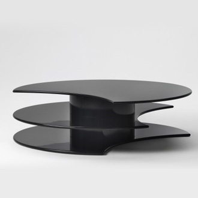

Girevole table by Luigi Caccia Dominioni
Girevole table is composed by two main components: the three halfmoon floors and the rotational joints between the floors. To build the floors I have generated two NUBS among which I've called the BEZIER(S1) function that draws the surface between them. Then the 2th and the 3rd floors have been rotated to show the potentiality of this table.
var points11= [[0,0,0],[-0.3,0.7,0],[0,1.9,0],[0.7,2.2,0],[1.3,2.2,0],[2,1.9,0],[2.3,0.75,0],[2,0,0],[2,0,0],[2,0,0],[0.9,0.7,0],[0,0,0]] var knots11 = generateKnot(points11) var nubs11 = NUBS(S0)(2)(knots11)(points11); var curve11 = MAP(nubs11)(domain); var points12= [[0,0,0.5],[-0.3,0.7,0.5],[0,1.9,0.5],[0.7,2.2,0.5],[1.3,2.2,0.5],[2,1.9,0.5],[2.3,0.75,0.5],[2,0,0.5],[2,0,0.5],[2,0,0.5],[0.9,0.7,0.5],[0,0,0.5]] var knots12 = generateKnot(points12) var nubs12 = NUBS(S0)(2)(knots12)(points12); var curve12 = MAP(nubs12)(domain); var surf1 = BEZIER(S1)([nubs11,[1,1,0]]) var surface1 = MAP(surf1)(dom2d) var surf2 = BEZIER(S1)([nubs12,[1,1,0.5]]) var surface2 = MAP(surf2)(dom2d) var surf12 = BEZIER(S1)([nubs11,nubs12]) var surface12 = MAP(surf12)(dom2d) var semiluna = S([0,1])([3.5,3.2])(STRUCT([surface12,surface2,surface1]))
 The second main component is the joint which is a simple DISK extruded and the scaled on the ordinate axis to give it the seems of an ellipse.
The second main component is the joint which is a simple DISK extruded and the scaled on the ordinate axis to give it the seems of an ellipse.
var ellisse = S([0])([1.5])(DISK()()) var rotator = T([0,1])([3.8,4])(EXTRUDE([1])(ellisse))
Girevole table original model

Results obtained in Javascript and Pyplasm
.png)